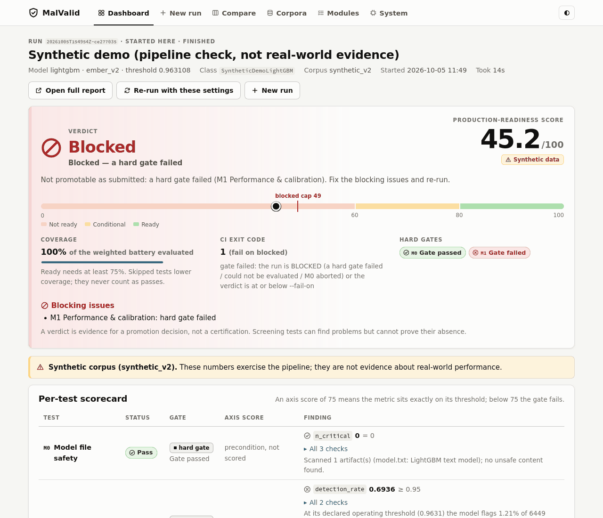
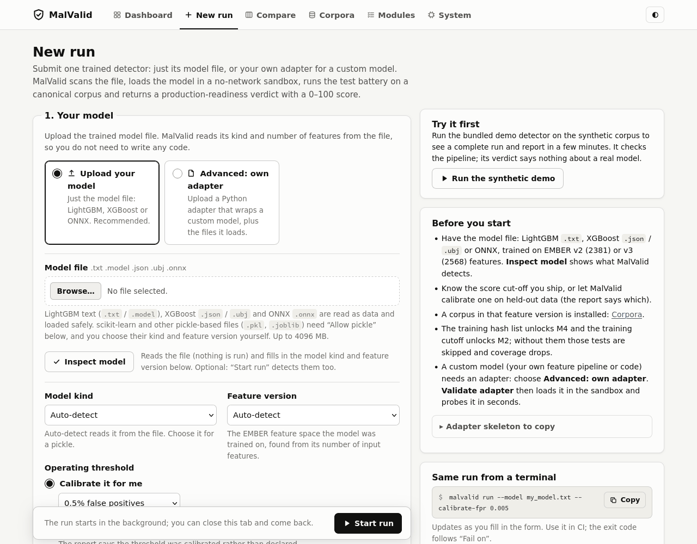

A pre-deployment gate for malware-detection models: upload your model file, get a verdict and a 0-100 readiness score before you ship it.
MalValid is not a malware scanner. It checks a detector you trained, against your own deployment policy. It never downloads, generates or stores malware.
A battery of tests, each scored against a YAML policy of thresholds and weights that you control.
M0 File safetyIs it safe to even open the model file? Scanned before anything is deserialized. Hard gate.
M1 PerformanceFalse-positive and detection rates at your threshold, plus calibration, ROC/PR and AUROC. Hard gate.
M2 DriftHow fast quality decays on samples newer than your training cutoff (time-window AUT(F1)).
M4 Membership inferenceCan someone with query access tell which files were in your training set?
M5 Backdoor screenLooks for evidence the model was trained to wave through marked malware. A screening test: no finding is not proof of a clean model.
M6 ExtractionHow cheaply the model could be cloned through its verdicts. Off by default.
M7 ExplanationDo decisions rest on features an attacker can set for free, or on one dominant feature? Tree gain and SHAP.
Supported model files: LightGBM text, XGBoost JSON/UBJSON, and ONNX. M3 is not part of this release.
READY, CONDITIONAL, NOT_READY or BLOCKED, a 0-100 score, a report.json, a self-contained report.html, and an exit code a CI job can act on.| Verdict | Meaning |
|---|---|
READY | Score at least 80, no gate failed, enough of the battery ran. |
CONDITIONAL | Score at least 60, but something needs a human decision. |
NOT_READY | Score below 60, or nothing could be scored. |
BLOCKED | A hard gate failed, a test errored, or the file was unsafe to open. Score capped at 49. |
This is a real report from the synthetic demo bundled with the repository. It ends BLOCKED with a score of 45.2 on purpose: the demo's threshold fails the hard false-positive and detection gate. It checks the pipeline and says nothing about a real model.

Open the full interactive report

MalValid runs on your own machine. It is installed from a source checkout (it is not on PyPI).
Download the ZIP from the repository (Code → Download ZIP, extract all of it) or clone it, then double-click the launcher for your system in launchers/:
| System | Launcher |
|---|---|
| Windows 10 / 11 (x64), Windows 11 on Arm | launchers\malvalid.bat |
| macOS | launchers/malvalid.command |
| Linux | launchers/malvalid.desktop, or run launchers/malvalid.sh |
The first start sets everything up in a private per-user folder (a few minutes, internet needed). Your browser then opens on MalValid; click Run the synthetic demo to see a full run, or upload your model under New run.
Python 3.11 or newer, from a source checkout:
git clone https://github.com/garvit-agarwal-purdue/MalValid.git && cd MalValid
python3.11 -m venv .venv && source .venv/bin/activate
pip install -c constraints/lock-py311.txt -e ".[onnx,featurize,web]"
malvalid --version
malvalid sandbox-check # which isolation backends work on this machinemalvalid serveIt prints a private link and opens your browser. The server listens on 127.0.0.1 only.
cd examples/synthetic_demo
python train.py # train the demo LightGBM model (a few seconds)
malvalid run --model model.txt --threshold 0.963108 --training-cutoff 2017-12-28 \
--training-hashes train_sha256.txt --config gate.yaml --out runs/demoThen open runs/demo/report.html. It ends BLOCKED with score 45.2 and exit code 1, which is the intended outcome.
sudo apt-get install bubblewrap) for the full OS sandbox: no network, read-only file system, home directory hidden.brew install libomp for LightGBM and XGBoost; Windows needs the Microsoft Visual C++ Redistributable (x64).The real EMBER evaluation corpora (about 5-10 GB each) are not shipped and are built once from the official releases; the synthetic demo needs no downloads. Windows and macOS have not yet been tested end to end on real machines, per the README.